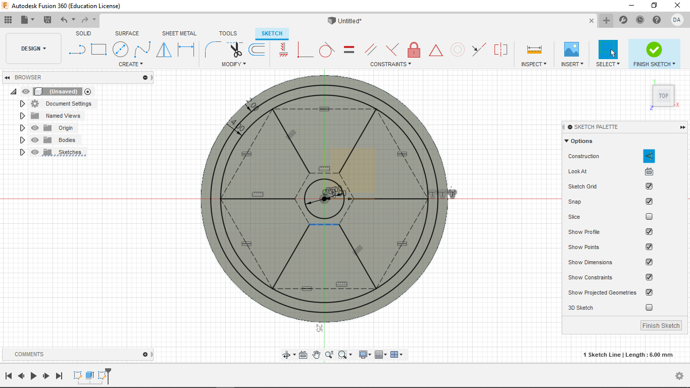
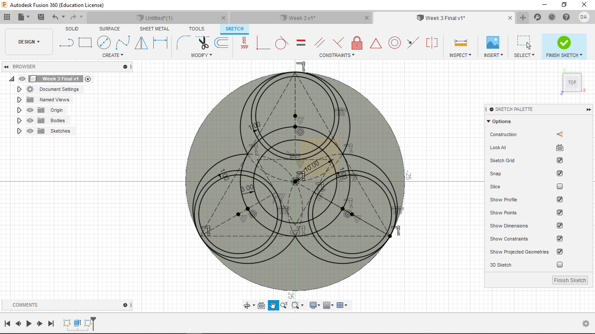
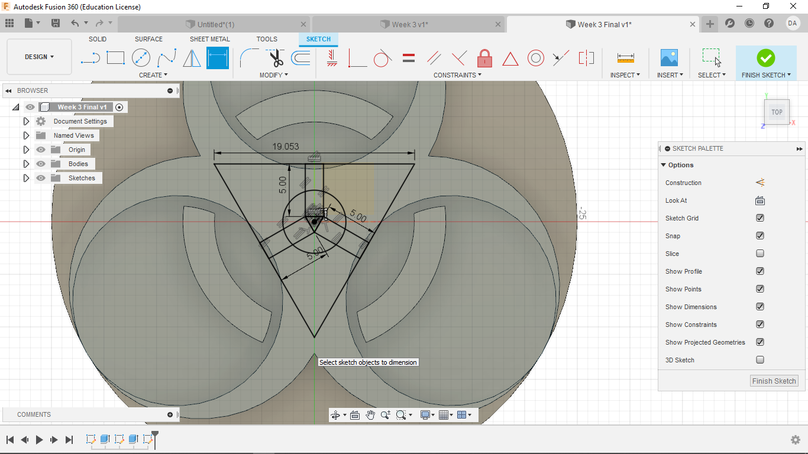

Week Three
Additive Manufacturing
This week was all about learning how to use Fusion360 and the Prusa MK3 3D printers.
The first step this week was to get trained on the 3D printers. Getting trained first helped me make sure that my CAD work was compatable and ready to use once it was finalized for printing. For simplicity - and I'd like to think I have some narrative authority here - I'm going to go over the steps for printing at the end.
The main software we are using with the 3D printers is Fusion360. This cloud based CAD system is great for making simplistic designs, like the ones we are working with this week, upto some of the more complet and constrained designs we will see in later weeks.
1. Experimenting with Fusion360
After downloading Fusion360 and starting a new file, I made the the origin and x-, y-, and z-planes visable. Then I started experimenting with Fusion.
I then started a new sketch in the x,y-plane and was staring at a blank canvas as such.
I then made a rectangle of random size with one vertex at the origin.
I followed this up with a circle of eaqually random size centered at the origin.
Using the coincidence tool, I joined the upper left corner of the rectangle to the top point of my circle.
I drew a line coincident with the top side of the rectangle to the bottow side (also coincident).
I then set an arbitrary length to that line using the dimension tool
At this point I experimented with what parts of my design were still unconstrained.
In the same manner as the last, I made another line from the left side of the rectangle to the right.
I gave this line the same arbitrary dimension as the last. This fully constrained my simple design.
2. Making the Radioactive Warning Symbol
Following a guided video tutorial, I made my first real sketch in Fusion360
Like my previous design, I start by making my oginin and planes visible. Then I start a new sketch on the x,y-plane. I then start the sketch by making a circle centered at the origin with a diameter of 50 mm.
I then extrude that circle 2 mm upwards.
After starting a new sketch on the supper surface of the disk, I offset two circles, one -2 mm and the other -4 mm from the outer edge of the surface.
I then Make a hexagon centered at the origin and set its center to vertex length to 6 mm. I also make a circle centered at the origin with a diameter of 8 mm.
I then draw a line from each vertex of the hexagon to the inner most circle. Following that, a line is drawn between each line and the ones next to it on the circle side. Finally, using the equal constraint, each of those connecting lines is made an equal length. Though it sounds complex. the result is quite simple as seen below.
I then made the following lines into constructions.
Next I made another circle centered at the origin.
To constrain it, I then made it coincident with the vertices of the hexagon
From there, the following sections were extruded 1.5 mm.
Color as you wish.
3. Making the Biological Symbol
I repeat the first two steps from the pervious symbol until I have started a new sketch on the surface of the raised disk.
I make a triangle centered at the origin and circumscribed within the base. I make the base of the triangle parallel to the x-axis. Then draw lines from each vertex to the origin, then make them all constructions
Now I create 3 circles, each being coincident with one vertex and sharing a center point with the respective line. This will gives 3 overlapping, fully defined circles.

Now break the internal lines and make them into constructions. This will gives a solid central design
Then make another smaller triangle of 10 mm in the center, 180 degrees offset from the original. Make the top parallel to the x axis. Make this a construction. Then once again make lines going from the midpoint of the triangle to vertex of the larger triangle. Make them constructions
Now make smaller circles by the method used earlier. At this point, Fusion 360 might view some spots as having to many constrains, leading to some odd glitches where no internal spaces are defined. An easy work around is to make the last circle coincident with the center point of the line of the internal triangle. This has at least fixed my very strange error. From talking with others it seems to be caused by how a computer handles Fusion360 (aka my laptop is crap)
Now make an offset of -1 mm in each of these smaller circles.
Make a another circle centered at the origin with a diameter of 25 mm
Now create an offset of -3 mm.
Now break and make into constructions the following areas.
Now extrude by 1.5 mm. The center designs could also be done here, but with some of the errors from the number of constraints, I decided to make those in another sketch and extrude them in a negative direction.
Start the last sketch on the surface of the extruded area.
Make another triangle pointing down with the sides stretching just beyond the plane the are on. Make the upper edge parallel to the x-axis. Then define the length of one side.
Now make a circle centered at the origin with a diameter of 6 mm and another triangle in the same orientation of 1 mm.
Now makes some rectangle, each sharing a side of the inner most triangle and going until they are coincident with the out triangle.
Now make some breaks and constructions as seen below
Now extrude for -1.5 mm. The negative is very important here.
Color as you wish.
4. Printing My Symbol
The first step to printing from a CAD file (such as this one) is to save it as an STL file.
To do this, right click on the project name in the upper left field and go to "save as STL".
Then keep the basic settings the same, and click "ok".
Finally, name the file and save it wherever you want.
Then, using what ever method you like, whether it be email, flash drive, or sd card, transfer this STL file to a computer with PrusaSlicer.
Now on that computer, open PrusaSlicer and access your file (again, it should be one one of the above platforms or one of your choice).

Drag the STL file onto the work plane in PrusaSlicer, and it should open the file.

In the lower right, click "slice now". From here, your print should load. Slide the scroll bar in the middle right to make sure that your print has rendered correctly, as seen below.

Now click "Export G-code" in the same spot where you clicked "slice now" in the lower right. Save the file onto an SD card. This time you must save it on an SD card.

Insert the SD card into the Prusa MK3. Normally, at this point, you would warm up the printer and insert the fillament, but the printer was in use before me, so all of that was already done before I started printing. Select the file you want to print and it will start to print. We have to stay by the printer for the first 30 minutes to make sure that the print has not failed. Fortunately, this print was less than the 30 minute period.

The final result looks something like this.
Design Files
My Design files for week 3 can be found here.